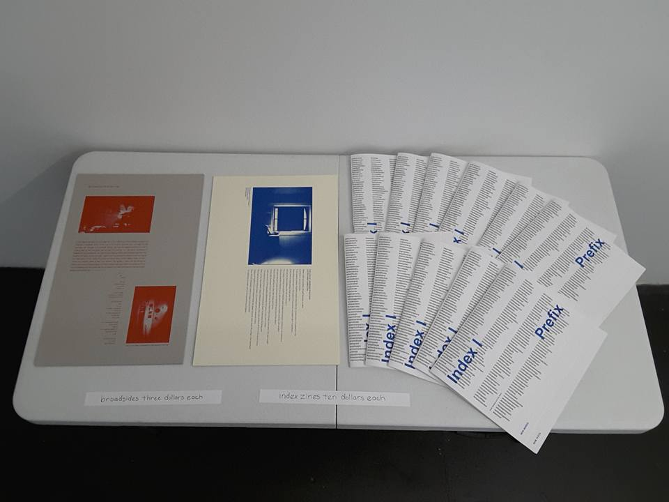
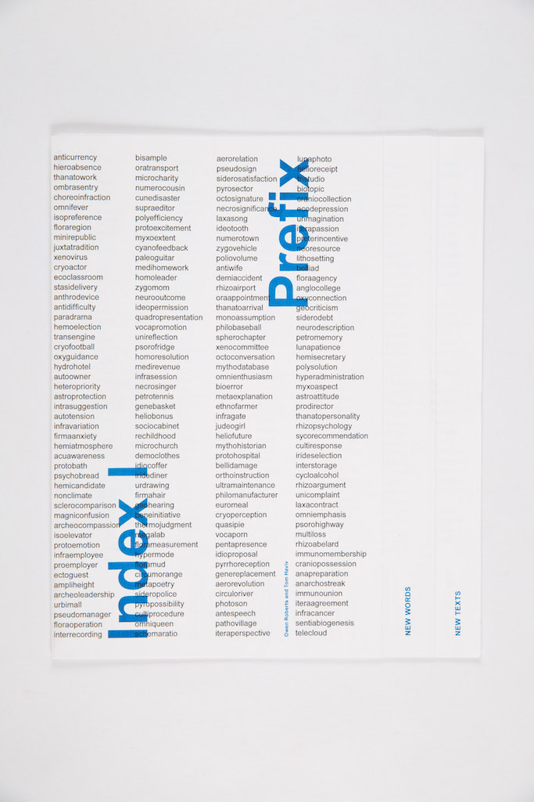
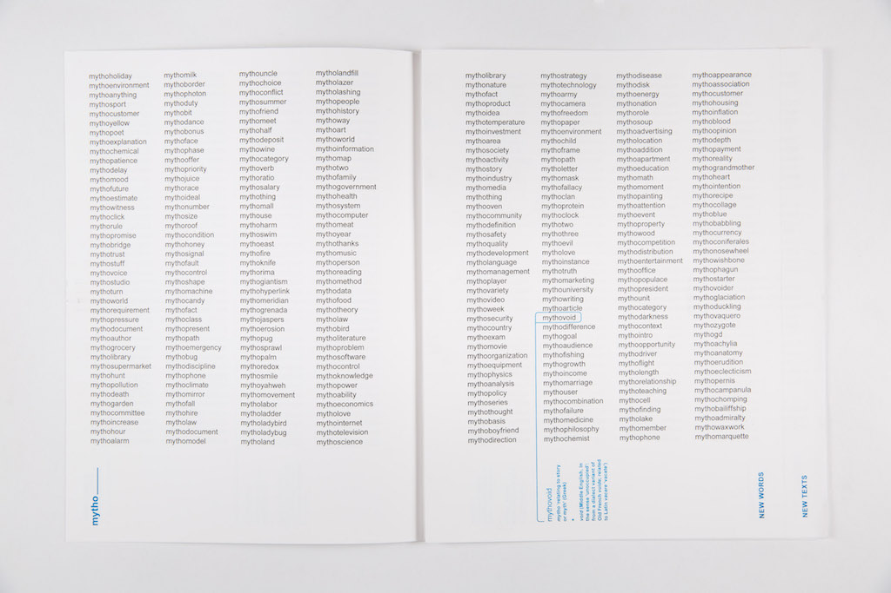
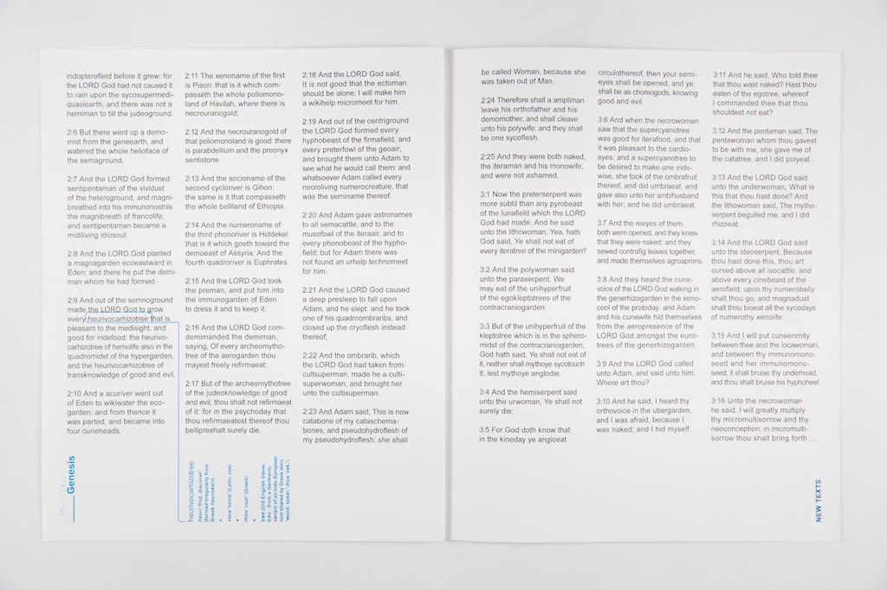
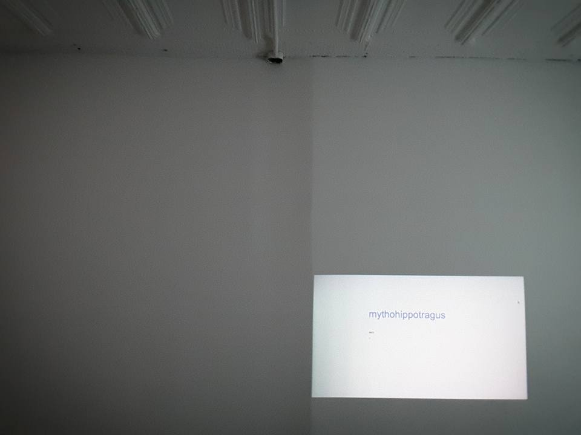
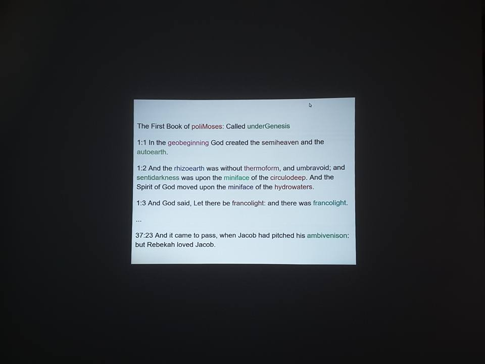

<div class="row" id="page">
	<div class="columns medium-12">
		
		<p>1. <a href="http://www.indexindexindex.com/" target="blank">Index 1</a> generates "new words" by attaching Greek & Latin prefixes to (an approximation of) all the nouns in the English language.
		<br><br>
		We are using two sets of nouns, one is "all nouns", which consists of 55,191 words, and a smaller set of m which we are calling "some nouns", which consists of 1480 more common words.
		<br><br>
		The nouns are taken from the WordNet database.
		<br><br>
		Definitions sourced from Wiktionary.org
		</p>

		<p>2. Text generator places the "new words" randomly in a range of texts of different genres and forms, using the NLTK to identify common nouns, and a Markov chain algorithm to generate new hybrid texts.</p>

		<p><a href="https://twitter.com/geneword" target="blank">@geneword</a> posts new words each day.</p>

		

		

		
		
		
		

		<p>Selections from Index 1, along with a reading, were exhibited at <a href="http://www.mathew-nyc.com/" target="blank">Mathew NYC</a> in July, 2016.</p>

		
		

		<p><a href="/work.html">back to work</a></p>
	</div>
</div>

